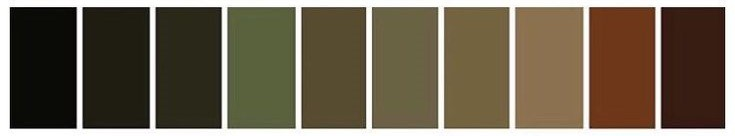
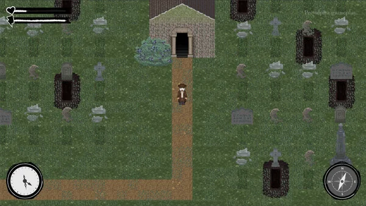
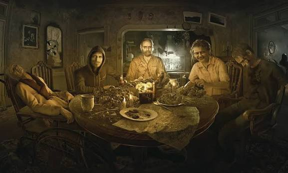
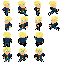

Genre
Psychological Horror
A psychological horror exploration game where the player uncovers hidden ritual notes inside an abandoned family house while surviving an increasingly aggressive supernatural entity.
Game Designer
Gameplay Programmer
Unity
C#
16 Weeks
PC

Invisible Intruders was developed as an academic game design project focused on psychological horror, environmental storytelling and immersive exploration using Unity.
Psychological Horror
2 Players but only one can play while the other help
2 Playable Levels
Exploration
Collect Ritual Notes
Supernatural Witch
Instead of relying on constant jumpscares, Invisible Intruders was designed to create fear through uncertainty, environmental storytelling and progressive tension.
The game tells the story of a family trying to revive the father's deceased grandmother after discovering a forgotten ritual hidden inside the abandoned house.
As the player explores the environment, hidden notes reveal fragments of the ritual while a supernatural witch begins to appear more frequently, gradually transforming the house into a dangerous labyrinth of darkness.
"Horror becomes stronger when the player imagines what might happen next instead of constantly being attacked."

Before building the game, we followed a structured design process to understand horror experiences, player expectations and gameplay opportunities that could create tension through exploration instead of relying only on jumpscares.
We analyzed psychological horror games including Resident Evil 7, Outlast and P.T. to understand pacing, lighting and environmental storytelling.
Visual references helped define the atmosphere, architecture, color palette and emotional tone of the abandoned family house.
Different gameplay ideas were evaluated until exploration and narrative became the core mechanics of the experience.
A first playable version was developed in Unity to validate navigation, interaction and level progression.
The visual language combines abandoned domestic spaces, darkness and subtle supernatural elements to generate uncertainty and emotional discomfort.



We analyzed successful horror games to understand how atmosphere, progression and environmental storytelling influence player emotions. Rather than copying mechanics, we extracted design principles that inspired Invisible Intruders.

Strong environmental storytelling through a believable abandoned house and gradual pacing.
Fear generated through vulnerability and the inability to fight back, encouraging stealth and tension.

University student who enjoys narrative-driven horror experiences with exploration, mystery and immersive environments.
Reward players who investigate every room with narrative discoveries and hidden clues.
Replace constant scares with anticipation, silence and environmental storytelling.
Increase danger as players advance, making exploration more stressful over time.
The narrative was designed to motivate exploration while gradually increasing psychological tension. Instead of explaining the story through cutscenes, players uncover the family's past by collecting handwritten ritual notes hidden throughout the house.
A father returns to his late grandmother's abandoned house after discovering a mysterious ritual capable of bringing her back to life. Alongside his family, he begins searching for the missing pages of the ritual without realizing they are awakening a dangerous supernatural entity.
The entire experience revolves around a simple loop that becomes progressively more stressful as the supernatural presence grows.
Search each room using the flashlight.
Collect ritual pages scattered across the house.
Stay alive while the enemy patrols the environment.
Continue exploring new areas until every note is found.
Provides visibility while increasing the feeling of isolation.
Players investigate every room searching for hidden ritual notes.
Each note expands the story while unlocking progression.
The witch appears more frequently during the second level, forcing players to move carefully.

Players become familiar with the house while collecting their first ritual notes and discovering the flashlight. Enemy encounters are limited to maintain mystery and build anticipation.

Lighting is drastically reduced and the flashlight becomes the player's only source of vision. The witch actively hunts the player, transforming navigation into a survival challenge.
Every interaction was intentionally designed to reinforce tension without overwhelming the player.
The flashlight is introduced early to teach players its importance before darkness becomes a major obstacle.
Enemy encounters increase gradually, allowing players to learn the environment before facing constant danger.
Lighting, room composition and note placement subtly guide exploration without relying on intrusive UI.
HUD elements were intentionally reduced to maximize immersion and maintain visual tension.
Collecting notes rewards curiosity while gradually revealing the family's tragic story.
Fear emerges from uncertainty, darkness and anticipation rather than constant jumpscares.
Invisible Intruders was entirely developed in Unity using C#. The project focused on creating a smooth exploration experience, interactive storytelling and progressive horror mechanics.
Scene management, lighting, animations and gameplay systems.
Player controller, interactions, collectibles and game logic.
Progressive enemy appearances based on player progression.
Flashlight mechanics combined with dynamic lighting to reinforce psychological tension.
A visual overview of the development process, environment design and final gameplay experience.


Watch a complete walkthrough demonstrating the exploration mechanics, atmosphere and enemy encounters.
This project became an opportunity to understand how game mechanics, level design and storytelling work together to create emotional experiences.
The progressive increase in tension, environmental storytelling and flashlight mechanics successfully encouraged careful exploration.
Balancing exploration and horror required several iterations to avoid frustrating the player while maintaining suspense.
Expand enemy AI, include adaptive sound design, multiple endings and puzzle mechanics to increase replayability.
"Great horror is not about what the player sees, but about what the player expects to see."